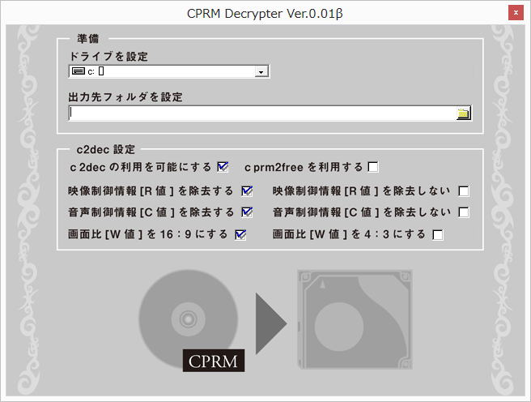

| TOP | weblog | TIPS | Works | リンク |
| 2012-11-08 EMOBILE、他、問題点と解決 LTE対応の新しいEMOBILE端末（GL０２P）、大活躍してますが問題点も少しずつ。 一つは今までダウンロードソフト出来ていたファイルが出来なくなった事。 無線が故、でいろいろと制限、プロトコルとかDLのやり方とか帯域制限とか。 もう一つはせっかく購入したWi-Fi子機がWindows8で使えない。 これはEMOBILEと関係ないが、ドライバインストールでハッシュエラーとなります。 解決方は、まずDLソフトの変更。 いろいろ試しましたが「Freemake Video Downloader」。 良いです、DL早いし、使い勝手めっちゃいいし。 でもユーなんとかから音楽などの動画をDLは法律違反になるとか、でも、「違法にアップロードされた動画・音楽だと知らずにダウンロードすること」は違反には該当しないらしいので、よく見極めてからDLしよう。 Freemae製のソフトはいい出来です。「Freemake Video Converter」はコーデック変換でお世話になってます。 ただし、→MPEGはダメです、ノイズ入るし、変換できない（再生しても何も表示しない）ときがあります。 REGZAからダビングしたVFOもダメです。トラックを認識しません。 MPEGやVFOファイルは「TMPGEnc 4.0 XPress」を使っています。 でも、CPRM解除も違法になってしまったのね。 定番の解除ソフト「CPRMDecrypter」も流通ストップしちゃいました。 Winsows8にアップグレードして困っている人も多いのでは。  「2012-10-29 ハードディスクの障害対策につてい考えてみた」でも書いたんだけどDVD-RやBD-Rは数年後必ず読めなくなるのでHDDに保存すべきなのに、家庭内リッピング禁止もどうかと思うのですがね。 大流通していたメジャーソフトがピタッと流通ストップすることってよくあることだから、非ダウンロード型のインストーラーは保存するようにしています。 USBタイプのWi-Fi子機（のWindows7のドラバ）はWindows８では対応していない機種が多いようです。 しょうがないので有線LANを無線LANにコンバートする機械（メーカーではWiFiルーターとか言っている）を買いました。 PLANEXのMZK-W300NH3です。 最大４回線まで有線を無線に変換できます。 手持ちのUSBタイプのWi-Fi子機のWindows8対応が完了したら、こいつはREGZA（TVとHDD・BDレコーダー）用になります。 で「DTCP-IPムーブ」にチャレンジしてみようとお思う。 リビングに置いているlenovoは最初Wi-Fi使ってたけど、奥の部屋とリビングは有線を弾いているので、こいつにつないでます。 ネットワークドライブ接続とリモート操作できるので便利です。 |